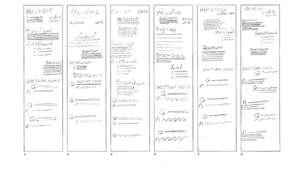
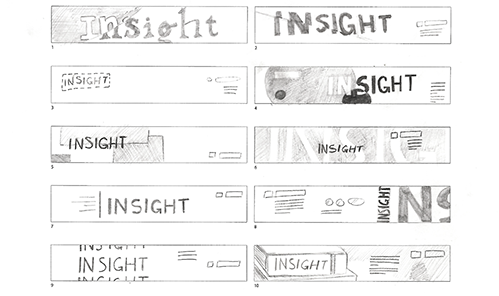

Website Redesign
Sketches and Thoughts
I like the idea of having the subhead and the author and date on the other, but it might be hard to put in practice. Having something set to the right is something i would like to do too. 2. After drawing it out I really like the idea of having the author before the subhead. 3. This one goes along with a few ideas from other thumbnails that I liked. I also liked having the subhead indented.
What I'm trying to accomplish
The page I was laying out was a little information followed by a lot of interview, so the two things I tried to do were to make the first little bit different and interesting, and to make easy to tell what was a question and what was an answer. After doing the type hierarchy survey part of me wanted to just use one type face. Finding two font that work well together was a little hard I’ll definitely keep working on that.
Questions I asked myself
There are a lot of questions. Should I Make the title bigger? Should I separate it to two lines? Would it be better if I set the introduction/subhead in bigger type? Is there a better way to separate the questions and answers? Is it a bad idea to have that much type in italic? Should I put more space between the body copy and the interview?
What I learned about web pages this week?
It was interesting to look at it zoomed all the way out. The new perspective of web page layout was really cool. You see things differently when you look at them differently. I learned quite a few things. I thought it was interesting that Most type was sixteen point. I will definitely look closer at the layout of websites.
Final
What I've Learned
Good use of space is one big thing I’ve learned this project. I feel like I’ve also learned a lot about making each element work better with the next. It was different to work with something long and narrow, and with so much type.